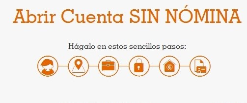

E-mail
Dni o Tarjeta de residencia
Fecha de nacimiento
Información básica sobre protección de datos de ING BANK NV, Sucursal en España.
¿Quién es el Responsable del tratamiento de sus datos personales? ING BANK NV, Sucursal en España (ING) con domicilio en C/ Severo Ochoa 2, 28232 Las Rozas (Madrid). Disponemos de un Delegado de Protección de Datos cuya dirección es dpo@ing.es.
¿Cómo obtenemos sus datos personales? Los habrá facilitado usted o habremos accedido a ellos a raíz de sus consultas, solicitudes o contrataciones de productos, operaciones o transacciones que haya realizado con nosotros, su navegación por sitios Web, propios o de terceros, o que hayamos obtenido del uso de dispositivos móviles de telecomunicaciones, TPV´s, cajeros automáticos u otros canales legítimos. También pueden haber sido cedidos legítimamente por terceros si usted nos ha autorizado en el ámbito de la contratación de un producto o prestación de un servicio. Le informamos de que ING BANK utilizará sus números de teléfono móvil y su correo electrónico para informarle, puntualmente, sobre cualquier aspecto relacionado con sus cuentas así como de que la información relativa a sus productos le será remitida por Internet a través de correspondencia web, pudiendo, no obstante, revocar esta opción en cualquier momento. En caso de que facilite los datos de un segundo interviniente en la contratación de un producto trataremos los mismos de la forma indicada en esta información. En caso de que no formalice su alta como interviniente en el producto en un plazo máximo de 3 meses, sus datos serán eliminados.
¿Para qué tratamos sus datos personales? Tratamos sus datos con el fin de gestionar y prestar el servicio que haya solicitado o contratado, y asegurarnos de que le ofrecemos los mejores productos y servicios financieros, según sus necesidades, llevando a cabo análisis y /o estudios que nos permiten mejorar la calidad de nuestros servicios y comunicarle nuestras ofertas. En relación con nuestros productos de crédito, tratamos sus datos de solvencia económica para cumplir con la obligación legal de analizar su capacidad de pago, y también porque queremos ofrecerle productos adecuados a su perfil. En otros casos será necesario tratar sus datos para cumplir con obligaciones exigidas por la legislación aplicable. Si necesitamos obtener su consentimiento para efectuar algún tratamiento de datos, le informaremos de ello en el momento en que sea necesario obtenerlo, pudiendo denegarlo entonces, o revocarlo en cualquier momento de acuerdo con la legislación aplicable en esta materia.
¿Quiénes son los destinatarios de sus datos? ING puede comunicar sus datos a entidades del grupo ING, a organismos públicos en cumplimiento de obligaciones legales, a ficheros de solvencia económica y de cumplimiento o incumplimiento de obligaciones dinerarias de acceso público o de otra tipología a la que nos encontremos adheridos cuando sea necesario para la prestación del servicio o contratación que haya solicitado, y a otras entidades ajenas a ING que tratarán sus datos por cuenta de ING como parte de la prestación de servicios que les hemos contratado.
Cuáles son sus derechos? Usted tiene derecho de acceso a sus datos, rectificación, supresión y portabilidad, así como el derecho a la limitación u oposición al tratamiento de sus datos, y a retirar el consentimiento prestado, en cualquier momento, como se explica en la información contenida aquí. También tiene derecho a presentar una reclamación ante la Autoridad de Control competente si entiende que el tratamiento de datos de ING no se ajusta a la legislación vigente.
Puede consultar más información y detalle sobre Protección de Datos en ING aquí.
Al pulsar enviar declara haber leido y aceptar la Declaración de Datos